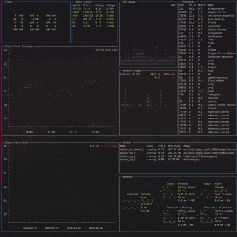
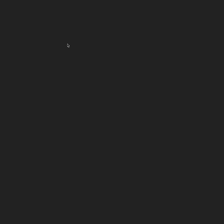
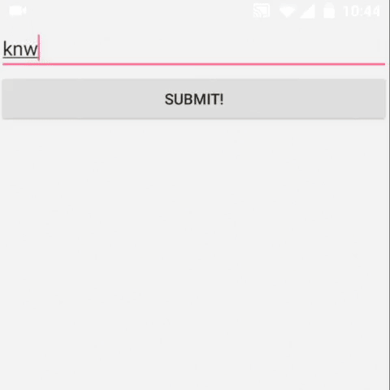
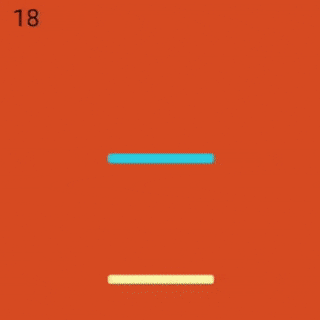

About Me
I'm Cameron Lenius, a Software Developer and uWaterloo Alumni. I'm a highly motivated individual with a passion for functional programming and a growing interest in computer graphics. My professional work largely consists of web application development in Clojure/ClojureScript and Java. My personal work often deals with javascript and graphics. This site is where I host my personal projects.
Projects
Gloomhaven Card Browser
Creator and maintainer of www.gloomhavencards.com. I recently started playing Gloomhaven with my brother and was looking for a site to browser the character ability cards. I found a couple but they weren't very polished and/or were missing features I wanted so I decided to build my own! The app was created using Next.js and deployed using Vercel.
Check out the code...
Term Dash
A Terminal UI Dashboard written in ClojureScript. Displays system data such as cpu/network usage as well as processes, docker, and weather data. Also includes a stock ticker/graphs with info pulled from alphavantage.co. The app is currently only configurably via changing the code in the config file and is optimized for my screen size.
Check out the code... Cityscape
An ongoing project where I attempt to build a procedurally generated city written in Javascript using the three.js library. Currently it's more of a randomly generated city since the whole thing is generated when the page is loaded but it will eventually have an infinite grid. Features I would like to add include streets, cars, varying building shapes.
Try it out...
Realtime Path Tracer
I've been having a growing interest in compute graphics so I built a path tracer based off 'Ray tracing in one weekend' by Peter Shirley. The path tracer itself is written using GLSL in a fragment shader while the UI and scene interaction is created using WebGL.
Try it out...
Ascii Cursor Tail
A javascript experiment based off the website ertdfgcvb.xyz. Generates a trail of ascii characters following the mouse with radius size dependant on how fast the mouse is moving. In order to create the effect I had to dynamically create span tags across the entire vertical of the page, then calculate based on character and line height where the trail should show.
Try it out... Text Finder
This project was my team's submission for UofT Hacks III for which we were finalists. We created an Android application that takes a photo of a physical text and highlights keywords inputed by the user using the Tesseract Optical Character Recognition. The idea was to emulated using a 'Ctrl-F' search in real life.
Check out the code... Colour Bounce
Colour Bounce is a mobile platformer game for Android devices. The game is an infinite vertical platform scroller consisting of coloured platforms. By tapping the screen you change the background colour thus removing all platforms of the same colour. Platorms begin to move and enemies begin to appear as the game progresses to increase difficulty. The game was created using Android Studio, Java, XML, and the LibGDX game engine API.
Check out the code... Settings
Toggle and/or adjust settings for this site